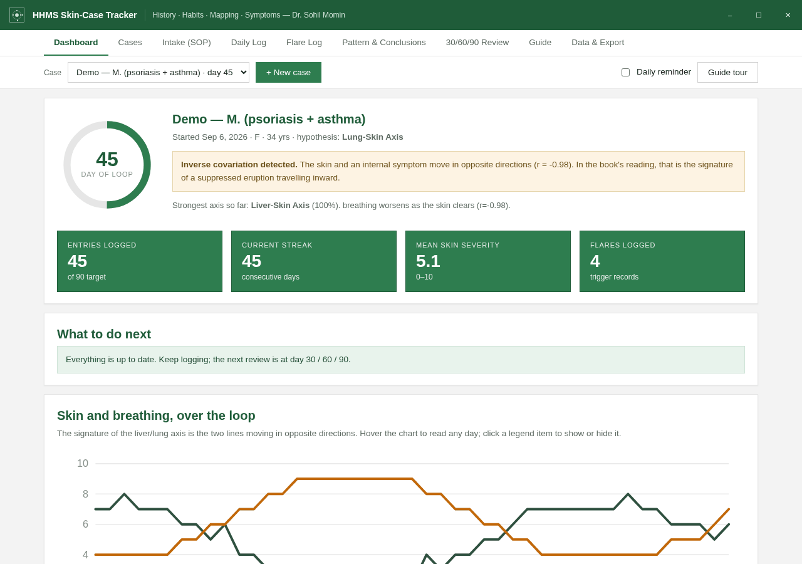

Daily HHMS log
One entry a day: the skin severity, the day's habits, and five symptom groups scored 0–10, plus a flare log with the 48-hour food, cycle, stress and sleep around it.
HHMS Skin-Case Tracker is a private, offline browser app for keeping a skin case in one place — the day-by-day log, the body map, the photographs, and the patterns that only show up across 90 days.
No account, no server, no tracking — everything stays in your browser. It records; it does not diagnose.
Six things the app is built to do — record, map, connect, read, review and export. Nothing here is medical advice; the reading of the pattern is the clinician's job.
One entry a day: the skin severity, the day's habits, and five symptom groups scored 0–10, plus a flare log with the 48-hour food, cycle, stress and sleep around it.
Mark where the eruption is, where it has been, and where it has migrated — present · has been · migrated — and attach dated photographs to the same record.
A skin-vs-symptoms chart, a lead/lag view, a colour-blind-safe correlation heat-map, baseline-vs-current, and a plain-language conclusion drawn from your own log.
Structured reviews at the three milestones, so a case is looked at in the same way each time — and the change since the last review is easy to see.
Export the full backup as JSON — including photos — plus daily-log CSV, a pooled research CSV, the photos as a ZIP, a codebook, and a one-page printable report.
Everything is stored in your own browser. There is no account, no server and no tracking. Install it as an app and it keeps working with no connection.
Four steps, in the order the app is meant to be used.
Add a case with a short label. Press Load demo case on the Cases tab, or open the app with #demo on the end, to explore with sample data first.
Record skin severity, the day's habits and the five symptom groups. Add a flare entry when something changes, and mark the eruption on the body map.
Open the Pattern & Conclusions tab to see the skin against each symptom group over time, with the heat-map and the plain-language reading of your log.
At 30, 60 and 90 days run the review. Export the JSON backup, the CSVs, the photos ZIP or a printable report whenever you need to share or keep the trail.
The dashboard shows the current case at a glance — the day of the loop, the entries logged, the streak, the mean severity and the flares — then the reading of the pattern below it.
#demo.
Whichever you pick, the data stays on the device you use it on.
Open the live app and start logging. Nothing to install and nothing to sign up for.
Open the appOpen the link, then use your browser's Install option (⊕ in the address bar, or Add to Home screen). It then works fully offline.
Clone the repo and open the app file — it is one self-contained page.
git clone https://github.com/drsamonline/skin-case-tracker.git
Not medical advice. This app records information; it does not diagnose and gives no medical advice. The axis scores are a transparent, rule-based reading of your own log. If a symptom worries you, see a doctor; in an emergency, seek emergency care.
No. It is a single self-contained page that runs in your browser, with no account and no server. Once it has loaded — or once you install it as an app — it works fully offline.
Everything is stored in your own browser, on your own device. Nothing is sent anywhere — there is no account, no server and no tracking. You can export at any time and import the JSON back on the same or another device.
HHMS is the four fields the app records: History, Habits, Mapping and Symptoms. They are logged day by day and read together as a pattern over time.
No. It records; it does not diagnose. Nothing in the app is medical advice and it claims no medical accuracy or outcomes. The axis scores are a transparent, rule-based reading of your own log, and the reading of the pattern is the clinician's job.
Yes. Press Load demo case on the Cases tab, or open the app with #demo on the end of the link, to explore a sample case.
The full backup as JSON (including photos), a daily-log CSV, a pooled research CSV with one row per case, the photos as a ZIP with a manifest, a photo-list CSV, the codebook as Markdown, and a one-page printable clinician report.
It is free to use for personal and clinical purposes, but it is copyrighted — Copyright © 2026 Dr. Sohil Momin, all rights reserved. You may not sell it, redistribute it, publish it or modify it without written permission. See the LICENSE for the full terms.